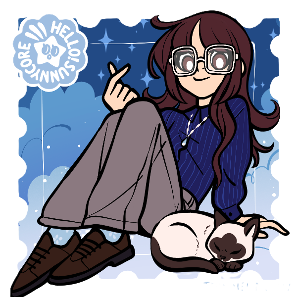
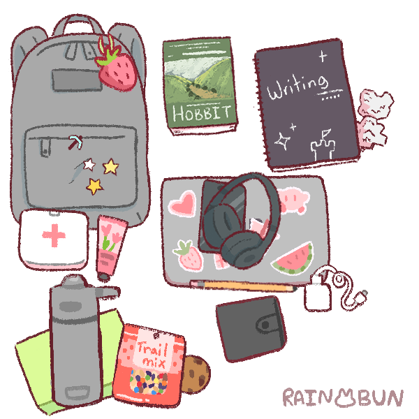

About me

Click me to make your own !
Hi ! I'm Galaxi :) I currently live in Europe (yes, that's very vague) and speak French and English fluently.
Age : I'm gen z so I was born somewhere between 1997-2012 ;)
Hobbies : crochet, cross-stitch, reading, coding, collecting any kind of physical media, watching movies, listening to music.
MBTI : INFP
My favourite...
- Superheroes : Nightcrawler, the Flash, Moon Knight
- Video games : Minecraft, Sky: Children of the Light, Avatar: Frontiers of Pandora
What's in my bag ?

Click me to make your own !
Code I used that isn't mine
The little bird you've noticed hopping arround a couple pages is from here.
The "Large Yellow Polka Dot Pointer" cursor is from here.
The little cat (named Zebi after my cat Eusebio) on all the webpages is a modified version I made based on this code here.